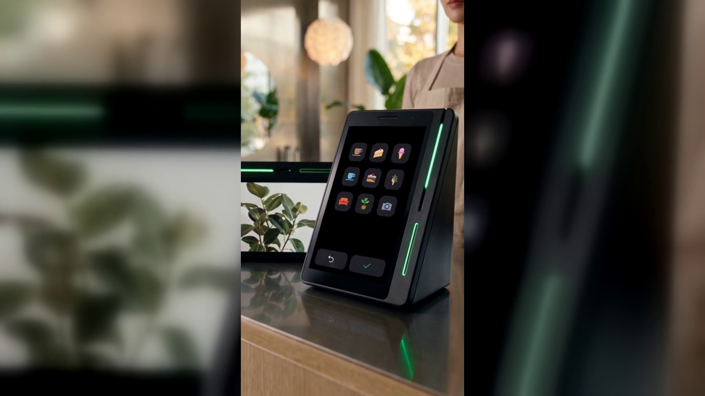

예약 손님이 리뷰를 남기게 하는 방법
결론부터 말씀드리면, 예약 손님은 리뷰를 남기기에 가장 좋은 손님입니다.
그런데 대부분의 예약 매장에서 그 손님은 계산만 하고 나갑니다.
미용실, 네일샵, 피부관리샵처럼 예약을 받고 일하는 매장은
손님 한 분에게 쓰는 시간이 깁니다.
한 시간, 두 시간을 마주 앉아 있고, 끝나면 만족한 얼굴로 일어섭니다.
그런데 그 마음이 글로 남는 일은 드뭅니다.
손님은 계산을 하고, 인사를 하고, 문을 나섭니다.
집에 가서 리뷰를 쓰는 분은 드뭅니다.
예약 장부는 꽉 차 있는데 네이버에 뜨는 리뷰 수는 몇 달째 그대로인 매장,
생각보다 흔합니다.
사장님이 게을러서가 아닙니다.
리뷰를 부탁하려면 손님이 지갑을 꺼내는 그 짧은 순간에 말을 꺼내야 하는데,
그 순간은 계산하느라 이미 바쁩니다.
게다가 방금까지 머리를 만져 드린 분께 "리뷰 좀 남겨 주세요"라고 말하는 일은
아무리 해도 익숙해지지 않습니다.
부탁하는 쪽도 민망하고, 듣는 쪽도 부담스럽습니다.
종이에 안내문을 붙여 두어도 손님은 읽지 않습니다.
결국 리뷰는 "남겨 주면 고맙고 아니면 어쩔 수 없는 것"이 되어 버립니다.
문제는 사장님의 성격이 아니라, 계산대에 놓인 도구가
결제만 할 줄 알았다는 데 있습니다.
네이버단말기(Npay 커넥트)에는 키워드 리뷰라는 기능이 있습니다.
결제와 동시에 네이버 리뷰가 쌓이는 방식입니다.
손님이 화면에 뜬 키워드 칩을 손가락으로 고르면
그것이 그대로 네이버 리뷰가 되고, 손님에게는 포인트·쿠폰이 붙습니다.
사장님이 말을 꺼낼 필요가 없습니다.
손님도 집에 가서 따로 시간을 낼 필요가 없습니다.
부탁하는 일이 아니라 주고받는 일이 되는 것입니다.
여기에 스마트플레이스 쿠폰을 연동하면 그 쿠폰이 다음 예약을 부릅니다.
리뷰를 남긴 손님이 쿠폰을 받고, 그 쿠폰 때문에 다시 오고,
다시 와서 또 리뷰를 남기는 흐름이 만들어집니다.
기기는 유광 검정에 옆으로 비스듬한 쐐기 모양이고,
커피컵 높이의 작은 탁상 기기입니다. 옆면에 초록색 불빛이 한 줄 들어옵니다.
화면이 둘이어서 사장님이 보는 큰 세로 화면과
손님이 보는 작은 화면이 나뉩니다.
데스크가 좁으면 세로로, 상담 테이블 위라면 가로로 —
가로로도 세로로도 놓을 수 있어서 자리에 맞춰 두시면 됩니다.
결제 수단은 카드와 QR, 페이스사인, 삼성페이까지 받습니다.
페이스사인은 지갑을 꺼내지 않고 얼굴로 결제하는 방식입니다.
관광객이 오는 상권이라면 위챗페이와 알리페이플러스도 쓰입니다.
손님이 대기하거나 시술을 기다리는 동안에는
매장 이벤트와 새소식을 손님 쪽 화면으로 알릴 수 있습니다.
실제로 쓰고 계신 분의 말도 공개되어 있습니다.
네이버페이 공식 이용후기에 실린 최00 · 미용실 대표의 말입니다.
"예약·결제하면서 포인트가 쌓이고 리뷰까지 남아 신규 손님이 늘었어요. 기기 디자인도 깔끔해 인테리어와 잘 어울려요."
(출처 : 네이버페이 공식 이용후기 페이지, 2026년 9월 확인)
예약 매장의 리뷰는 손님의 성의에 기대면 늘지 않습니다.
손님은 마음이 없어서가 아니라 자리가 없어서 안 쓰는 것입니다.
그 자리를 계산대에 만들어 두면, 손님이 계산하는 몇 초 사이에 끝납니다.
그렇게 쌓인 리뷰는 다음 손님이 매장을 검색할 때 보는 화면에 남습니다.
네이버 공식 안내에도 앞으로 매장 운영에 도움이 될 새로운 기능이
추가될 예정이라고 되어 있습니다(일부 서비스는 오픈 준비 중입니다).
오늘 예약 장부와 네이버 리뷰 수를 나란히 한 번 놓고 보십시오.
두 숫자의 차이가 크다면, 계산대에 무엇을 놓았는지 보실 차례입니다.
네이버단말기(Npay 커넥트)는 결제가 끝난 자리에서 네이버 리뷰·쿠폰·적립이 이어지는
스마트 사인패드입니다. 쓰던 포스는 그대로 두고 연결만 합니다.
· 상담 문의 · A/S 접수 — 평일 9시~20시 / 토·일·공휴일 11시~17시
· 정품 신제품 보증 · 수도권 직영 설치
누리네트웍스 · 결제는 더 쉽게, 매장은 더 스마트하게
🔗 https://nwpos.co.kr?utm_source=youtube&utm_medium=social&utm_campaign=daily7&utm_content=connect-booking-review
#네이버단말기 #네이버커넥트 #Npay커넥트 #네이버페이단말기 #키워드리뷰 #네이버리뷰 #매장리뷰 #예약매장 #미용실 #네일샵 #스마트플레이스 #쿠폰적립 #포인트적립 #재방문 #단골관리 #사인패드 #결제단말기 #카드단말기 #포스기 #간편결제 #매장운영 #자영업 #소상공인 #개인사업자 #가맹점 #누리포스 #누리네트웍스 #Shorts
[SNS아이콘]
[SNS배너]